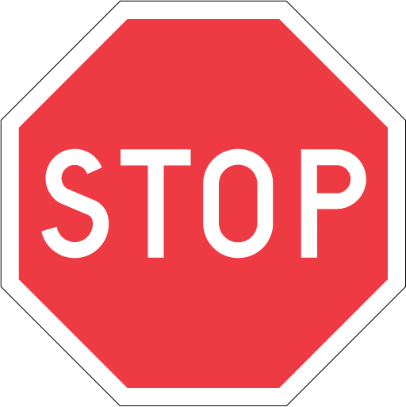

Stop sign
All sorts of vehicles has to stop before this sign, even when you are on a bike..

First time bicycling in Malmo? Here are some rules and guidelines provied to help you under your cycling tour.
If you are fifthteen years or younger, you are entitled to have a helmet on your bike ride.
When it is dark outside, you have to have and use cycle lamps, both in front of the bike and in the back.
It is not necessary to wear reflex, but it can be your saviour. In darkness, car drivers have trouble to see cyclists that wear dark clothes.
It is required to have a bell on the bike, otherwise you could get fines.
It is required to have brakes on the bike. Otherwise, you could get fines.
All sorts of vehicles has to stop before this sign, even when you are on a bike..

On a sidewalk you are allowed to cycle, as long as you does not cycle faster than walking speed (5-7km/h).
You will come across this sign many times if you are in traffic. This simply means that people who are walking have admission to go. If you jump off your bike and walk it is free to go also for you.

You are allowed to go by bicycle here, but you have to adapt your speed to the people who are walking.

Here, cars have to wait until you have crossed the street.

This sign means that the road is provided and divided both for people who go by bicycle and people who walk.

This sign tells all vehicle, including bikes, that driving is not allowed.

This sign tells you that the road is a sidewalk and that you are not allowed to go by bicycle here.
When red or yellow light, you have to stop. When the light turns green again, you are allowed to drive again.
=======When the traffic light shows red or yellow light, you have to stop. When the light turns green, you are allowed to continue cycle.
>>>>>>> origin/master"Don´t drink and drive"
It is not unlegal to go by bicycle when you have alcohol in your body. But if you can't cycle in a safe way for you and other road users, it may have an judicial sanction. You may also loose your driver license.
Unfortunately, there are loads of thiefs also in Malmö. Make sure you lock your bicycle!
During the winter half-year it might be very slippery on the road. Watch out for icy patches!
Since bicycles have no indicators, you should use your arm to show other road users if you will turn right or left.
You should use bicycle pathes as much as possible. Otherwise, go on the car road and keep right. If you are younger than eight years old or have a child who is younger than eight, you are allowed to cycle on the pavement.
You are always supposed to cycle on the right. On the road, bicycle road and in other areas.
You can park your bicycle almost everywhere. But look out for parking signs, they might tell you that it is forbidden to park right there.
In situations where you come from a bicycle path to a road, you are supposed to give way for cars. Slow down and look out for cars. When there are no cars, you can continue your way.
In some cases, there are cycle passages which are made for crossing the roads by bicycle. Sometimes, there are traffic lights which controls traffic. If there are not, you should have contact with the car drivers. You are not guilty to stop and give way for the car, but neither are they. You should read the situation and see who is likely to drive first. Always slow down near cycle passages. Many cars do not look out for cyclists.
Sources: Transportstyrelsen och Trafikverket